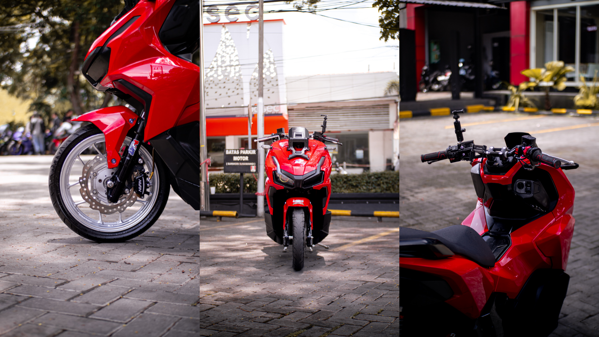
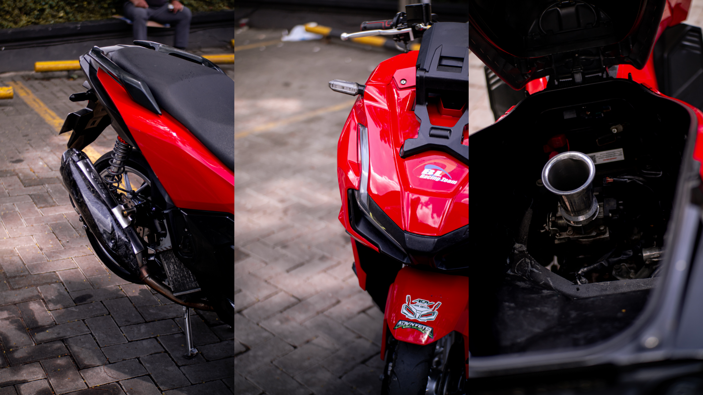

HONDA ADV 150
di tulis oleh Rasyid Hakim . pada 30 oktober 2025
Honda ADV 150 merupakan skutik bergaya adventure yang dirancang untuk memberikan pengalaman berkendara yang lebih serbaguna. Motor ini hadir sebagai jawaban bagi pengendara yang menginginkan skuter matik yang tidak hanya nyaman untuk digunakan di perkotaan, tetapi juga cukup tangguh untuk melewati jalanan yang tidak rata. Dengan desain bodi yang gagah, berotot, serta sudut-sudut tajam yang menonjolkan karakter petualang, ADV 150 memiliki daya tarik kuat bagi mereka yang menyukai tampilan sporty dan modern. Windshield yang dapat diatur ketinggiannya dan pencahayaan full LED juga menambah kesan futuristik sekaligus meningkatkan kenyamanan berkendara di berbagai kondisi cuaca.

Di sektor performa, Honda ADV 150 dibekali mesin 149 cc eSP yang responsif dan bertenaga, namun tetap hemat bahan bakar berkat teknologi PGM-FI. Mesin ini mampu menghasilkan akselerasi yang halus dan stabil baik untuk kebutuhan harian maupun perjalanan jauh. Suspensi depan teleskopik serta suspensi belakang ganda ber-tabung memberikan kemampuan redam lebih baik saat menghadapi jalan bergelombang. Selain itu, ground clearance yang lebih tinggi dibandingkan skutik urban lainnya membuat pengendara lebih percaya diri ketika melintasi jalan rusak atau polisi tidur yang tinggi. Kenyamanan berkendara juga didukung oleh posisi duduk ergonomis dan ruang kaki yang lega.

Fitur pendukung pada ADV 150 semakin memperkuat kualitasnya sebagai skutik premium kelas menengah. Sistem smart key memudahkan pengendara dalam mengoperasikan motor tanpa perlu menggunakan kunci konvensional, sementara panel instrumen full digital memberikan berbagai informasi penting seperti konsumsi bensin, waktu, indikator ABS, dan lainnya secara jelas. Pada beberapa variannya, motor ini juga dilengkapi dengan sistem pengereman ABS yang meningkatkan keselamatan saat melakukan pengereman mendadak. Kapasitas bagasi yang luas di bawah jok membuat motor ini cocok digunakan untuk membawa barang bawaan, baik untuk bekerja, kuliah, maupun touring. Dengan kombinasi desain tangguh, performa handal, serta fitur lengkap, Honda ADV 150 menjadi salah satu pilihan terbaik bagi para pencinta skutik yang ingin merasakan sensasi berkendara lebih bebas dan penuh petualangan setiap hari.